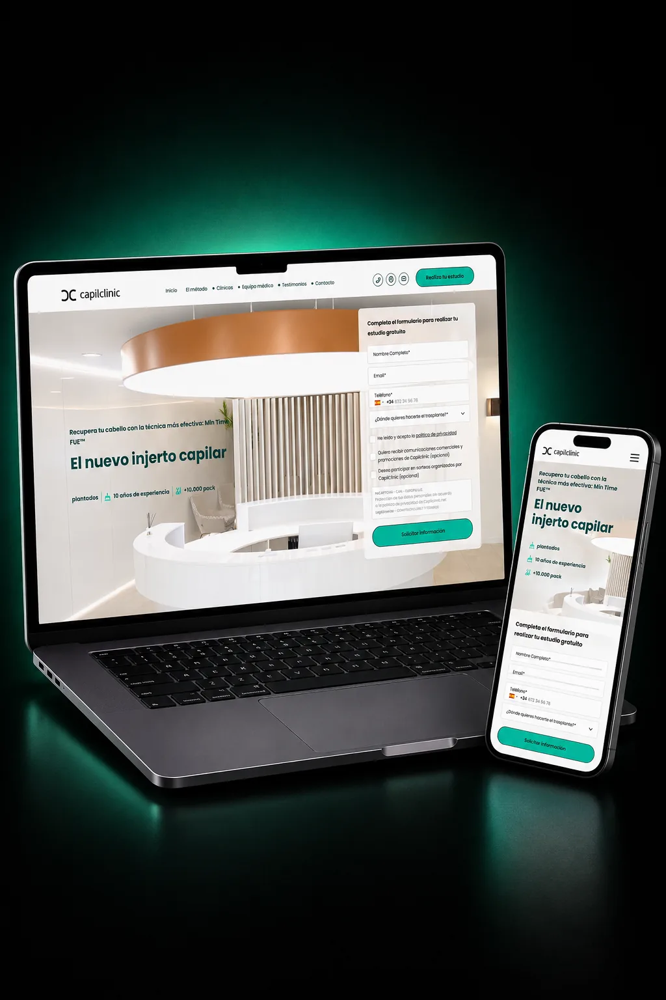

Tres oportunidades concretas para Hospital Capilar con 3 sedes propias y expansión internacional en marcha para 2026. El canal digital tiene un desfase respecto al nivel clínico real: la competencia turca ha mejorado significativamente su presencia online, y el paciente que decide a las 11 de la noche no encuentra reserva ni arquitectura de confianza a la altura.
3 oportunidades
Qué está pasando y qué se puede hacer.
El paciente que decide fuera de horario no tiene canal de entrada
El injerto capilar es una decisión que se toma con semanas de investigación, habitualmente en horario no laboral. Hoy el único punto de contacto es un formulario manual que no genera confirmación ni sensación de avance. Un sistema de reserva previa online —aunque sea para una videoconsulta de valoración— convierte ese momento de decisión nocturno en un lead cualificado sin intervención del equipo.
+30-40% captación fuera de horario de apertura
Brecha de percepción frente al turismo médico: peor canal, peor primera impresión
La competencia turca ha invertido en diseño digital y el paciente que compara ve más orden en pantalla de quien cobra menos — aunque la técnica sea inferior. La decisión de confianza se juega antes de la primera consulta. Una arquitectura visual que comunique el nivel clínico real (técnica Min Time FUE, equipo médico propio, sedes en España) cierra esa brecha de percepción donde se decide el 60% de los casos.
+20-25% tasa de conversión en comparadores internacionales
Web en un solo idioma real para expansión internacional 2026
Con la expansión internacional declarada para 2026, el paciente alemán, británico o nórdico que llega a la web encuentra la misma arquitectura que el paciente nacional. Cada mercado tiene patrones de búsqueda, referentes de confianza y señales de credibilidad distintos. Landings por mercado origen con contenido adaptado (certificaciones locales, testimonios del país, precios en su moneda) convierten significativamente más que una versión inglesa genérica.
+25% leads internacionales cualificados
Quick win · en 3 semanas
Reserva previa online + arquitectura de confianza vs. turismo médico
Sin tocar el CRM ni el sistema de gestión: añadir un flujo de reserva de videoconsulta online y rediseñar la home con arquitectura de confianza que eleve la técnica, el equipo médico propio y las sedes reales al primer scroll. 3 semanas de diseño + frontal. Impacto estimado: +30% captación en horario no laboral desde el primer mes.
Caso comparable · Salud
Una red de clínicas capilares que ya lo ha resuelto.

Capilclinic
Red de clínicas de injerto capilar multisede que necesitaba pasar del formulario manual a la reserva online real y diferenciarse del ruido low-cost y del turismo médico.
Qué hicimos
Reserva de videoconsulta online conectada al equipo médico
Arquitectura de confianza con antes/después y casos reales
Landings por mercado con señales de confianza locales
Si quieres, lo profundizamos en 15 min.
Te enseño cómo lo haríamos para Hospital Capilar, sin pitch comercial. Si no
encaja, mejor saberlo en 15 minutos que en 15 emails.